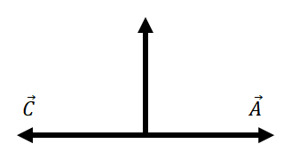

开学第一天课堂未道之杂探|
来不及写了关于向量的详细内容，不过看到很多非常好的文章，附链接于后。
看到路上这么多学生往来，实在是一个陌生景象
电动力学照旧要谈一个 vector 矢量和向量哪个更好听1，点乘叉乘可惜我竟然忘记了叉乘是不满足结合律性质。这是不寻常的， 毕竟群是建立在结合律上，矩阵也有结合律。下面有一个2

Figure 1: 结合律不成立简单特例
也可以用 \(\mathbf{A}\times(\mathbf{A}\times \mathbf{B})\) 说明。
四元数,所谓曹则贤恍然大悟一文|
另外忘记了行列式：交换两行变为原来的相反数。
行列式|
今天一位同学提出就行列式计算叉乘在其它维度下的情况可以这样拓展
\begin{gather*} (a,b)\times = \begin{vmatrix} \mathbf{i}&\mathbf{j}\\ a&b \end{vmatrix}\\ (a_1,b_1,c_1)\times(a_2,b_2,c_2)= \begin{vmatrix} \mathbf{i}&\mathbf{j}&\mathbf{k}\\ a_1&b_1&c_1\\a_2&b_2&c_2 \end{vmatrix}\\ (a_1,b_1,c_1,d_1)\times(a_2,b_2,c_2,d_2)\times(a_3,b_3,c_3,d_3)= \begin{vmatrix} \mathbf{i}&\mathbf{j}&\mathbf{k}&\mathbf{l}\\ a_1&b_1&c_1&d_1\\a_2&b_2&c_2&d_1\\a_3&b_3&c_3&d_3 \end{vmatrix} \end{gather*}这是一个很有想象力的点子。之后可以让 Mathematica 算一下有什么规律
现在的必修课老师都管这么严？究竟是教务的执念还是老师的疯狂
感谢选修，让我在课上读了 知乎－不听大牛言，弯路在眼前 重找到了自己过去看到读学问的思路愿景，再重照自己走偏的路。
下午查上文资料，对曹则贤再生好感，行文内容已属上品，关于历史和物理结合的探究 学得浅碎不如无——四元数、矢量分析与线性代数关系剖析。
另一篇英文关于四元数的历史 https://www.math.ucdavis.edu/~temple/MAT21D/SUPPLEMENTARY-ARTICLES/Crowe_History-of-Vectors.pdf
其它一些文章： 不听大牛言，弯路在眼前 计算机模拟：生化环材研究生的自我救赎之道
最后一节还有自我介绍，还要谈梦想～我的梦想早已烟散，久被肢解。不过一位同学说的好： 梦想这个词很远大，你说出来的大概是一个事业，如果你没有为此付出投入，那么在旁人那里显得会多么不自量力和可笑，倘若简单些，谈谈稍小的能够实现的事情，似乎词语里有“目标”这个词去概括它们，再提升为梦想却显人生隘渺。故而问梦想，想要负责的梦想，这样一个回答是个宏愿。
最后她还说了自己的梦想：在所热爱的领域留下一些值得纪念的痕迹
在想为什么自己没有想到这一点，可能斜月三星洞里不见长生的菩提了。
对了，热爱什么领域呢？
老师,论能力也许我只能爬上村后的小土坡,可我依然希望 你能带我去看珠穆朗玛。
曹则贤. 学得浅碎不如无——四元数、矢量分析与线性代数关系剖析[J]. 物理, 2020, 49(10): 680-687. DOI: 10.7693/wl20201004
Footnotes:
随意用时等价当然好，不过数学用向量以暗含自原点出发，物理用矢量强调箭头方向岂不美哉。另外 C++ 这个又变成数组了哈哈 知乎 再谈 vector 的翻译
下面图涉及视错觉，看起来一样长，实际上，（为了看起来一样把）竖线短一些
另外一位学长说得倒也有些想法，讲希望学得深一些，能够有一些掌握一些自己有竞争力。我一直如是想，不过未曾如他那般坚定说出来过，又心中思虑，我做到不到未必是外人不教我，父母局限，这些都是外在，讲它只现我无能也。